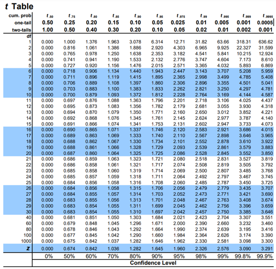

Four possible outcomes of null hypothesis testing
| our decision | |||
|---|---|---|---|
| H0 is NOT rejected | H0 is rejected | ||
| the null hypothesis is really... | true | correct | Type I error (false positive) |
| false | Type II error (false negative) | correct | |
Test whether students from university A have an average IQ which differ from 100.
Imagine picking out 20 students randomly from uni A and calculating their mean
An animation: Sampling Distributions
\[ SEM = \frac{s.d.}{\sqrt{n}} \]
\[ t = \frac{\bar{x}-\mu}{SEM} \]

1. Prepare data
2. Test for normality
a = c(117, 125, 116, 113, 102, 122, 123, 93, 99, 129, 132, 94, 85, 92, 101, 83, 119, 119, 101, 97)
shapiro.test(a)
> shapiro.test(a)
Shapiro-Wilk normality test
data: a
W = 0.94113, p-value = 0.2518
p > 0.05 means data is not significantly different from normal distribution, which is what we want.
3. Run the test
t.test(a, mu=100)
> t.test(a, mu=100)
One Sample t-test
data: a
t = 2.4063, df = 19, p-value = 0.02646
alternative hypothesis: true mean is not equal to 100
95 percent confidence interval:
101.0545 115.1455
sample estimates:
mean of x
108.1
A one-sample t-test was run to determine whether the mean IQ scores for students in university A (n=20) was different from the average IQ (µ=100). Sampled IQ scores were normally distributed as assessed by Shapiro-Wilk’s test (p= 0.25) and there were no outliers in the data. The group of 20 students were found to have a significantly higher IQ (M=108.1, s.d.=15.05) than the average, t(19) = 2.4, p < 0.03.
A one-sample t-test was run to determine whether the mean IQ scores for students in university A (n=20) was different from the average IQ (µ=100). Sampled IQ scores were normally distributed as assessed by Shapiro-Wilk’s test (p= 0.25) and there were no outliers in the data. The group of 20 students were found to have a significantly higher IQ (M=108.1, s.d.=15.05) than the average, t(19) = 2.4, p < 0.03.
1. Prepare data
2. Test for assumptions
score <- c(6,17,2,8,9,3,12,10,5,3, 10,14,12,9,18,16,8,20,10,11)
group <- c("SLI", "SLI", "SLI", "SLI", "SLI", "SLI", "SLI", "SLI", "SLI", "SLI", "TD", "TD", "TD", "TD", "TD", "TD", "TD", "TD", "TD", "TD")
df <- data.frame(group, score)
library(car)
qqPlot(df[df$group=='SLI', 'score'])
qqPlot(df[df$group=='TD', 'score'])
tapply(df$score, df$group, shapiro.test)
leveneTest(score ~ factor(group), data = df)
3. Independent samples t-test
t.test(score ~ group, var.equal=TRUE, data = df)
> t.test(score ~ group, var.equal=TRUE, data = df)
Two Sample t-test
data: score by group
t = -2.7027, df = 18, p-value = 0.01457
alternative hypothesis: true difference in means between group SLI and group TD is not equal to 0
95 percent confidence interval:
-9.419927 -1.180073
sample estimates:
mean in group SLI mean in group TD
7.5 12.8
An independent samples t-Test showed that 10 SLI children performed significantly worse [t(18)=-2.703, p=0.015] on a test of non-word repetition (M=7.5, s.d.=4.7) than 10 age-matched typically-developing controls (M=12.8, s.d.=4.05).
An independent samples t-Test showed that 10 SLI children performed significantly worse [t(18)=-2.703, p=0.015] on a test of non-word repetition (M=7.5, s.d.=4.7) than 10 age-matched typically-developing controls (M=12.8, s.d.=4.05).
The degree of freedom is the number of factors in a calculation that we can vary and still achieve a specific outcome.
\[ d.f. = n-1 \]